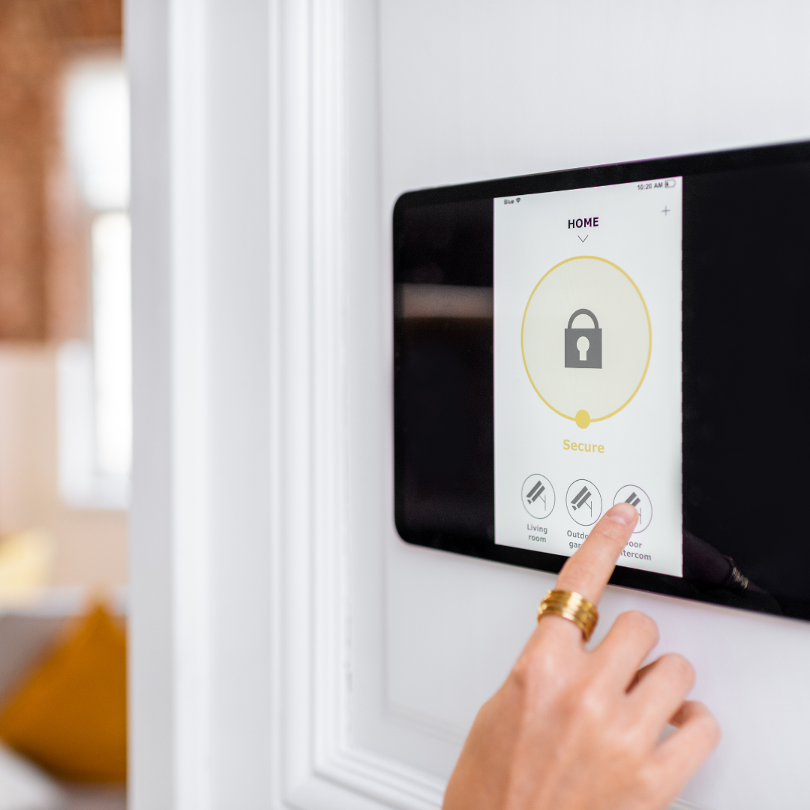
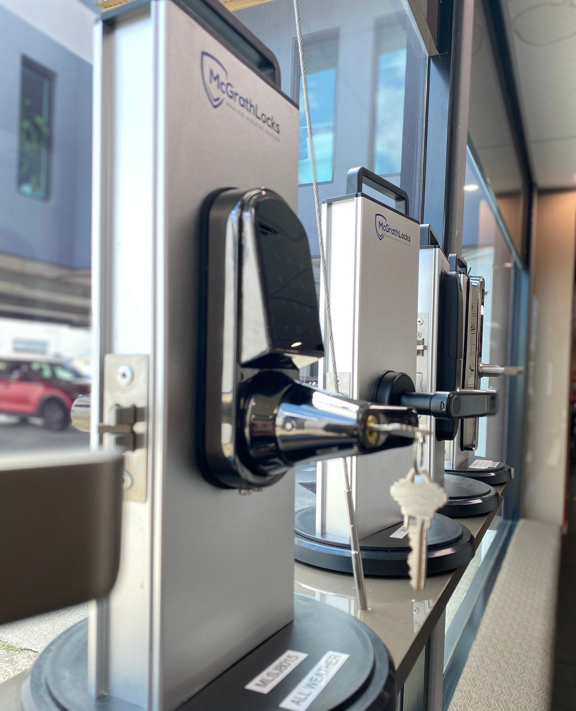
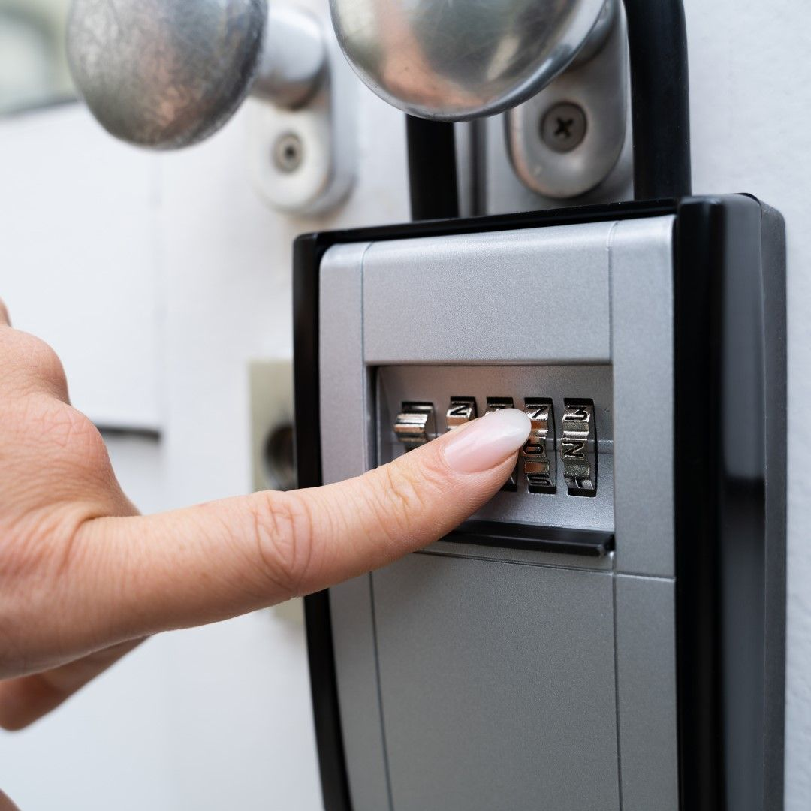
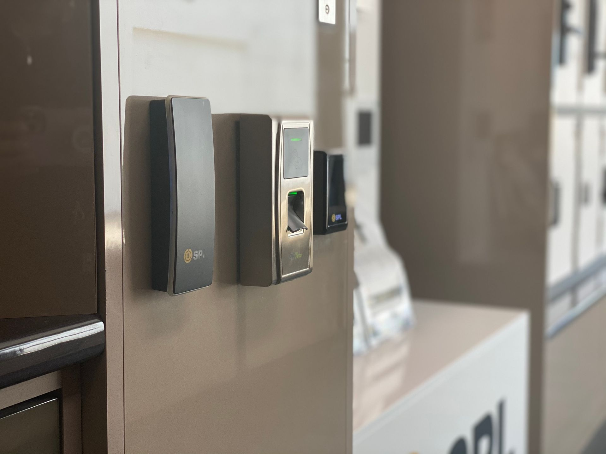

On this page
AT A GLANCE
Our commercial locksmith Brisbane team delivers reliable security solutions for businesses, offices and commercial properties.
Our commercial locksmith Brisbane team delivers reliable security solutions for businesses, offices and commercial properties. From lock upgrades to access control systems, we help protect your premises.
Get A Free Quote Now!

Locksmith Services Brisbane
At SPL Security Solutions, we offer comprehensive locksmith services tailored to meet the unique needs of Brisbane residents. Whether you're safeguarding your home, business or car, our skilled team delivers professional solutions to ensure your security and peace of mind.
For homeowners, we provide advanced security services, including smart lock installations, rekeying and the delivery and setup of safes. In addition, business owners can benefit from our tailored security assessments, offering solutions like access control systems, CCTV monitoring and restricted key systems to protect assets. Our auto locksmith services include car key replacements, ignition repairs and emergency access solutions when you’re locked out.
Whatever you circumstance, call (07) 5588 8111 for reliable locksmith services in Brisbane.
Residential & Commercial Locksmiths Brisbane
SPL Security Solutions is the trusted name for comprehensive locksmith and security services in Brisbane. Our locksmiths have decades of industry experience, and we deliver high-quality solutions tailored to both commercial and residential clients in Brisbane. Our skilled team provides expert advice, high-grade security products and exceptional service to ensure your property remains safe and secure.
Whether you need advanced commercial security systems, residential lock upgrades or emergency locksmith services, we have the expertise to handle all your security needs. We take pride in offering free quotes and a commitment to excellence in every job we undertake. If you're looking for a locksmith on the Gold Coast, visit our GC page.


Comprehensive Locksmith Services for Brisbane Businesses & Homes
At SPL Security Solutions, we understand that security is more than just locks and keys—it’s about peace of mind. When you need a residential or commercial locksmith, Brisbane residents turn to us for expert locksmith and security services that keep properties secure.
Commercial Locksmith Services
Businesses across Brisbane trust us to provide reliable, high-security solutions tailored to their unique needs. From access control systems to master key setups, we offer cutting-edge security designed to protect commercial properties.
Residential Locksmith Services
Your home’s security is just as important as your business. We offer a range of residential locksmith services to enhance safety, convenience and peace of mind.
Benefits of Hiring a Professional Locksmith
Many people assume locksmith services are only necessary during emergencies, but professional locksmiths provide a range of benefits beyond lockouts. Hiring a qualified residential and commercial locksmith Brisbane residents rely on ensures you receive expert security solutions tailored to your needs.
Some key benefits of working with SPL Security Solutions include:
- Enhanced security – A professional locksmith can assess vulnerabilities and recommend high-quality security upgrades.
- Key duplication and rekeying – Whether you need extra keys or want to rekey locks for security reasons, we offer efficient services.
- Emergency assistance – Locked out? A licensed locksmith provides 24/7 emergency support to get you back inside quickly.
- Advanced security solutions – We install and maintain cutting-edge security systems, including access control, CCTV and smart locks.
- Peace of mind – Knowing your locks and security systems are installed correctly gives you confidence in your home or business security.


Common Myths About Locksmiths Debunked
There are many misconceptions about locksmiths that can lead to misunderstandings about our services. Here are some common myths debunked:
Myth 1: Locksmiths Only Cut Keys
While key cutting is part of the job, professional locksmiths provide a wide range of security services, including lock installation, master key systems, access control and CCTV setup.
Myth 2: All Locks Are the Same
Not all locks provide the same level of security. Cheap locks can be easily bypassed, while high-security options offer superior protection against break-ins.
Myth 3: DIY Lock Installation Is Just as Good
Installing locks yourself can lead to security vulnerabilities. A professional locksmith ensures correct installation and optimal security for your property.
Myth 4: Locksmiths Are Only Needed During Emergencies
While we do offer emergency lockout services, locksmiths also help with security upgrades, maintenance and preventative measures to keep properties safe.
How Master Key Systems Improve Business Security
Managing multiple keys can be a hassle for business owners. A master key system provides a convenient solution by allowing different levels of access to employees while keeping sensitive areas secure.
Some key advantages of master key systems include:
- Simplified access control – One key can unlock multiple doors, reducing the need for a large set of keys.
- Improved security – Restrict access to certain areas while providing authorised personnel with necessary entry.
- Convenience – Managers and business owners can access all necessary areas with a single master key.
We design and install customised master key systems tailored to your business’s security requirements.


Why Regular Lock Maintenance Is Essential
Many people don’t think about their locks until something goes wrong. However, regular lock maintenance is essential to keep your security systems working effectively and to prevent unexpected failures.
Over time, locks can wear down due to weather exposure, dust buildup and frequent use. A poorly maintained lock may become difficult to turn, increasing the risk of key breakage or complete failure. By scheduling periodic lock servicing, you can:
- Extend the lifespan of your locks and security systems.
- Prevent lockouts and malfunctions before they happen.
- Enhance security by identifying potential weaknesses early.
- Reduce costs by avoiding expensive emergency repairs.
At SPL Security Solutions, we offer lock maintenance services to keep your home or business secure year-round.
How Keyless Entry Systems Enhance Security & Convenience
Traditional locks and keys have been a staple for decades, but keyless entry systems are quickly becoming the preferred choice for businesses and homeowners. These advanced security solutions provide greater convenience, enhanced access control and improved safety without the risk of lost or duplicated keys.
Keyless entry options include PIN code locks, biometric scanners, smart card access and mobile app-controlled locks. Businesses benefit from customisable access levels, ensuring employees only enter authorised areas, while homeowners enjoy seamless entry without carrying keys.
At SPL Security Solutions, we install and maintain high-quality keyless entry systems, providing cutting-edge security solutions tailored to your needs.


Choosing the Right Locks for Your Home or Business
Not all locks offer the same level of protection. Choosing the right locks depends on various factors, including the type of property, level of security required and budget.
Some of the most secure lock options include:
- Deadbolts – A strong and durable option for both residential and commercial doors.
- High-security padlocks – Ideal for securing outdoor areas, gates and storage facilities.
- Electronic locks – Provides keyless entry with PIN codes, fingerprint scanning or remote access.
- Restricted key systems – Prevents unauthorised duplication of keys for enhanced security.
Our locksmiths can assess your security needs and recommend the best lock options to keep your property safe.
Rekeying vs. Lock Replacement: Which Option is Right for You?
If you’ve lost a key, moved into a new property or had a security concern, you may be wondering whether to rekey your locks or replace them entirely. Both options provide security benefits, but the right choice depends on your situation.
- Rekeying involves adjusting the existing lock’s mechanism so old keys no longer work. This is a cost-effective solution if the locks are still in good condition.
- Lock replacement is necessary if your locks are damaged, outdated or compromised. Upgrading to high-security locks can significantly enhance your property’s protection.
Our locksmiths assess your security needs and recommend the best solution, whether it’s rekeying for convenience or a full lock replacement for upgraded security.


Trusted By Brisbane Businesses & Homeowners
Our reputation as the residential and commercial locksmith Brisbane residents depend on has been built on trust, reliability and exceptional service. We’ve worked with countless businesses and homeowners, delivering security solutions that stand the test of time.
Our clients choose us because:
- We offer transparent pricing with no hidden costs.
- Our locksmiths are licensed, insured and highly skilled.
- We provide fast response times for emergency services.
- Our solutions are customised to suit each client’s needs.
- We use only high-quality, industry-leading products.
When you choose SPL Security Solutions, you’re choosing a locksmith committed to your safety and satisfaction.
Our residential locksmith services in Brisbane ensure your home remains secure with rekeying, lock installations and smart lock upgrades. Whether it’s installing tamper-proof locks or providing emergency lockout support, we ensure your family’s safety and convenience.
Our commercial locksmith services in Brisbane include tailored solutions to protect your business. From high-security lock installations and master key systems to access control integration, we ensure your assets and premises are secure.
Our automotive locksmith services in Brisbane provide fast assistance for lockouts, lost keys and broken ignitions. We specialise in transponder key programming and fob replacements to get you back on the road quickly.
Our restricted key systems in Brisbane are ideal for managing access to sensitive areas. By preventing unauthorised duplication, they offer advanced access control for residential and commercial properties alike.
Keep your valuables secure with our wide selection of safes in Brisbane. For everything from floor safes and wall safes to deposit safes and digital options, we provide installation, unlocking and maintenance services to meet your security needs.
Our security systems in Brisbane combine modern technology like CCTV cameras, motion detectors and smart alarms to protect your property. We offer customised systems with remote monitoring for enhanced control and efficiency.
Our lock hardware solutions in Brisbane include tamper-resistant deadbolts, high-security lock, and innovative smart locks. Each product is installed with precision to meet the demands of modern security requirements.
Enhance the durability and functionality of your doors with our door hardware in Brisbane. From weather-resistant hinges to sleek handles and advanced door closers, we offer solutions to suit any property.
We source high-quality door hardware, featuring fire-rated components, smooth door closers, and refined handles, designed to complement modern and traditional interiors in Brisbane.
24/7 Emergency Locksmith Services Brisbane
At SPL Security Solutions, we understand that emergencies can happen at any time. Our 24/7 emergency locksmith services in Brisbane ensure you’re never left stranded or vulnerable. Whether it’s a home lockout, a broken business lock or an ignition problem, our team is ready to help.
Our mobile vans are equipped with advanced tools, allowing us to handle lock repairs, replacements and rekeying efficiently on-site. Your safety and convenience are our priorities—contact us anytime for professional assistance.


Contact SPL Security Solutions Today
If you’re looking for a reliable locksmith in Brisbane, SPL Security Solutions is here to help. Whether you need a new security system for your business, a lock replacement for your home or emergency locksmith services, we’ve got you covered.
Call us today for a free quote and discover why we’re the residential and commercial locksmith Brisbane residents prefer for professional, high-quality security solutions.
Frequently Asked Questions
-
What is the difference between a wall safe and a floor safe?
Wall safes are installed within walls, making them easier to conceal behind furniture or artwork. Floor safes are embedded in the floor and often offer greater capacity and durability, making them ideal for storing larger or heavier valuables.
-
What is the benefit of a master key system for businesses?
A master key system allows authorised personnel to access multiple locks with a single key while maintaining restricted access to specific areas for other employees. This provides convenience and enhanced control over security for businesses of all sizes.
Contact Details
24/7 Emergency Locksmiths or Security Tech


Trading Hours
Retail Shop
Locksmith & Security Solutions Gold Coast, Brisbane & Northern NSW